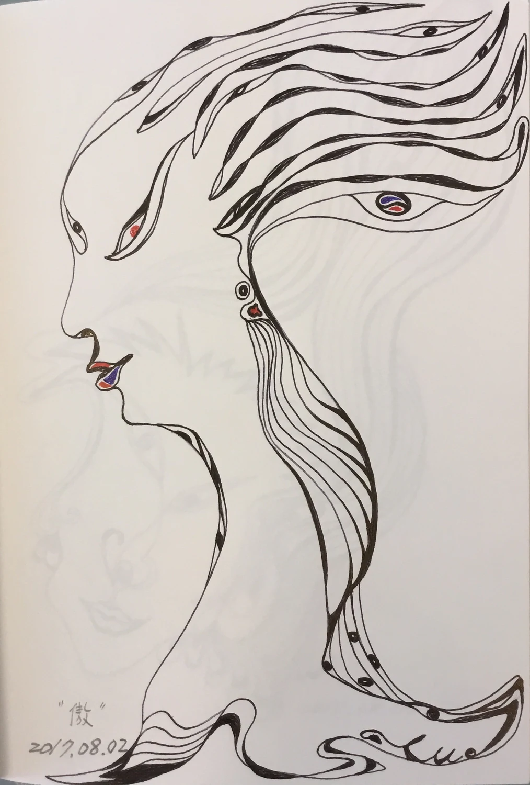

創作手札 Creative Notes
創作從未停止，只是以不同的形式生長 Creation never stops; it simply grows in different forms.
在陶土與線條之間，生成自己的宇宙 Generating my own universe between clay and line
藍色眼睛、橘紅色嘴巴與深灰裂縫，在黑色星空裡形成又禎的宇宙核心。 The blue eye, ember mouth, and charcoal rift form the core of Yuzen Universe in a dark field of stars.
01 / 關於又禎 About Yuzen
我以陶土、線條與裂縫作為創作語彙，讓潛伏於世界中的生命慢慢顯影。眼睛、嘴巴、圓形與流動的邊界經常出現在作品裡，形成一個持續生成中的生命宇宙。
每一件作品都像一顆小星體，記錄觀看、觸摸與想像留下的痕跡。
I use clay, line, and rift as a visual language, allowing the life hidden within the world to slowly appear. Eyes, mouths, circles, and flowing edges often emerge in the work, forming a living universe that continues to generate itself.
Each piece becomes a small celestial body, holding traces of looking, touch, and imagination.

創作起點 Beginning
第一個從陶土中甦醒的樹精昂首而立，像自然靈魂初次現身，也開啟了 Yuzen Universe 的生命語彙。
Tree Spirit's Pride The first spirit awakening from clay stands with its head lifted, marking the beginning of Yuzen Universe and its living language of eyes, faces, nature, and soul.
創作者
畢業於國立清華大學藝術與設計學系研究所。
從事室內設計三十餘年，持續投入陶藝、繪畫、木雕與多媒材創作。
近年以「Yuzen Universe」為創作主軸，透過裂縫、殘片、石紋與人格生成，探索萬物有靈與生命顯影的可能。
Creator
Yuzen graduated from the Graduate Institute of Art and Design at National Tsing Hua University.
With more than thirty years of interior design experience, she continues to create through ceramics, painting, wood sculpture, and mixed media.
In recent years, she has developed Yuzen Universe as her central creative world, exploring cracks, fragments, stone textures, and generated personhood as ways for animism and hidden life to appear.
02 / 創作理念 Creative Concept

世界本來就是活的。
我經常在石頭、樹木、海岸、舊牆與時間留下的痕跡裡，看見潛伏的生命。那些生命往往不是完整出現，而是透過裂縫、紋理與風化的痕跡慢慢顯影。
創作對我而言，不是創造，而是回應。
我只是將那些被看見的生命，輕輕記錄下來。
The world is alive by nature. I often see hidden life in stones, trees, coastlines, old walls, and the traces left by time. That life rarely appears whole; it slowly reveals itself through cracks, textures, and weathered marks. For me, creation is not invention, but response. I simply record the lives that have been seen, gently.
03 / 作品系列 Work Series
系列一 Series 1
生命從未缺席，只是等待被看見 Seeing hidden life within stones, trees, and cracks.
系列二 Series 2
從殘片、裂縫與時間之中，重新甦醒的文明 A civilization reawakening from fragments, cracks, and time.
系列三 Series 3
這些陶作不是實用的器皿，而是承載眼睛、嘴巴、孔洞與靈魂的生命容器；它們像身體，也像一個個正在生成的小宇宙。
系列四 Series 4
當線條開始流動，生命便悄悄顯現 When lines begin to flow, life quietly appears.
04 / 早期創作 Early Works
那些曾經留下痕跡的相遇，仍在這裡慢慢發光。
Encounters that once left traces still glow here slowly.
創作從未停止，只是以不同的形式生長 Creation never stops; it simply grows in different forms.
05 / 聯絡資訊 Contact Info